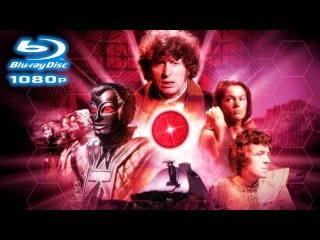
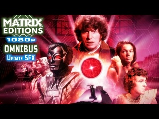
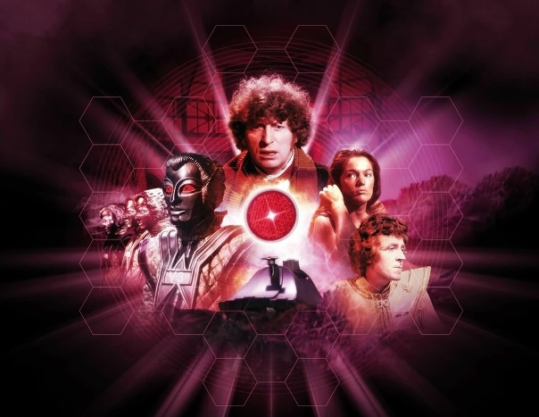
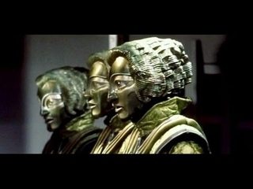

Субтитры: Русские и Английские |  |
|---|---|
с обновлением визуальных эффектов (cunningmunki) Субтитры: отсутствуют |  |
The Robots of Death
Дата выхода: 29 января - 19 февраля 1977
Формат: 4 эпизода по 25 мин.
|
ТАРДИС приводит Доктора и Лилу на борт «Штормового рудника 4» — огромной плавучей машины, добывающей минералы в пустынях далёкой планеты. Экипаж из аристократов-престижников обслуживают роботы трёх классов — Дамы, Воки и Супер-Воки, — и всё идёт по рутине, пока люди не начинают погибать один за другим. Подозрение падает на Доктора и Лилу, но истинный враг — среди тех, кто никогда не вызывает подозрений. Серия вводит термин «робофобия» (синдром Гримма) и выдаётся роскошным дизайном: декадентские наряды экипажа, минималистичные роботы с человеческими лицами и клаустрофобная атмосфера рудника создают одну из самых стильных историй классического сериала.
VHS - февраль 1988 / февраль 1995 | DVD - 13 ноября 2000 |
|---|---|
DVD-SE+Boxset - 13 февраля 2012 |  Blu-ray - 4 мая 2020 * Версия в нашей группе |

